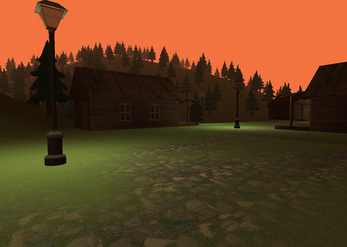
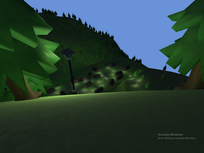

Embark on an epic journey through vast mountains and discover mythical villages hidden from the world.
Adventure game set in vast mountains and mystical villages. Explore legends and epic stories while interacting with a living world. Every peak holds a secret, and every village tells a story.
Uncover ancient secrets, forge alliances, and become a legend in a living, breathing fantasy world. A story-driven adventure that combines exploration with deep narrative.

